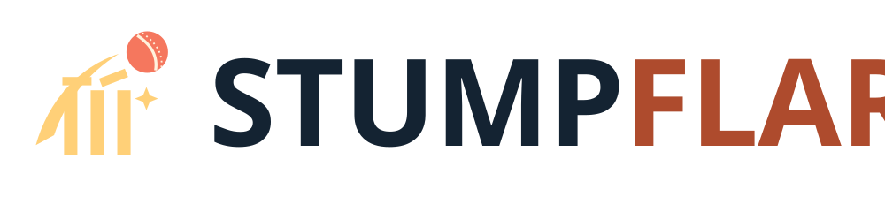

App icon · launcher shapes
One mark. Every screen.
Three stumps, lifted bails and a seamed ball. The rising trail supplies the motion; the flare supplies the name.
Small-size check
Recognisable at a glance.
Full-colour and single-colour vectors. Android maskable export keeps the mark inside the launcher safe zone.
Light-background lockup

Palette
Flare gold
#FFD078
Ball coral
#F5775E
Night
#081522